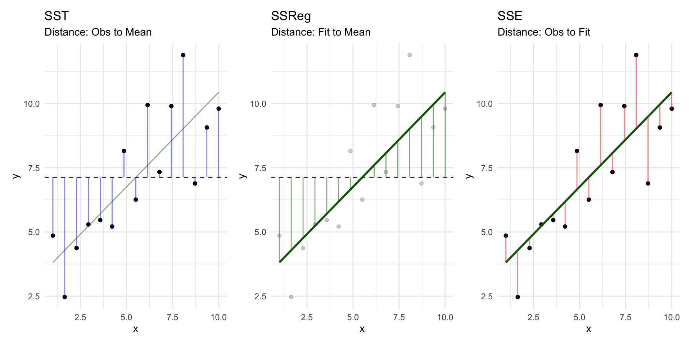
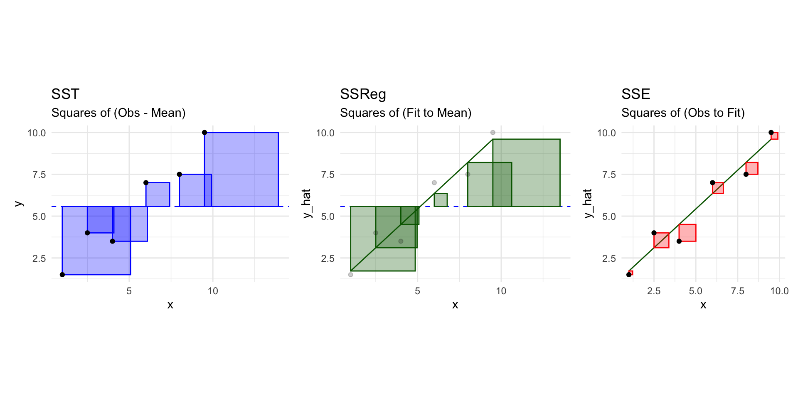
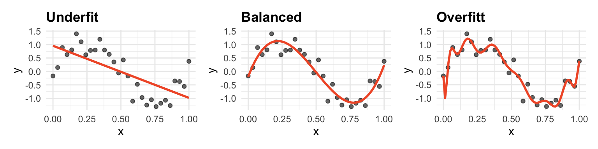

Model Selection
Day 15
Prof Amanda Luby
Carleton College
MLR so far
Interpreting coefficients
Writing lines for different groups (categorical predictors)
Inference for a single coefficient
Inference for linear combinations of coefficients
F tests
Influential points and diagnostics (leverage, standardized residuals, cook’s distance)
Multicollinearity
Today → putting it all together to compare models
Idea: how do we decide what variables to include?
2011-01-01
winter
2011
Jan
Sat
TRUE
no
57.39952
64.72625
80.5833
10.749882
categ2
654
2011-01-03
winter
2011
Jan
Mon
FALSE
no
46.49166
49.04645
43.7273
16.636703
categ1
1229
2011-01-04
winter
2011
Jan
Tue
FALSE
no
46.76000
51.09098
59.0435
10.739832
categ1
1454
2011-01-05
winter
2011
Jan
Wed
FALSE
no
48.74943
52.63430
43.6957
12.522300
categ1
1518
2011-01-07
winter
2011
Jan
Fri
FALSE
no
46.50332
50.79551
49.8696
11.304642
categ2
1362
2011-01-08
winter
2011
Jan
Sat
TRUE
no
44.17700
46.60286
53.5833
17.875868
categ2
891
2011-01-10
winter
2011
Jan
Mon
FALSE
no
43.13148
45.57992
48.2917
14.958889
categ1
1280
2011-01-11
winter
2011
Jan
Tue
FALSE
no
44.47892
49.23176
68.6364
8.182844
categ2
1220
2011-01-12
winter
2011
Jan
Wed
FALSE
no
44.74725
46.44257
59.9545
20.410009
categ1
1137
2011-01-13
winter
2011
Jan
Thu
FALSE
no
44.17700
45.57947
47.0417
20.167000
categ1
1368
Review: SST/SSReg/SSE

But, we work with sum of squares

Linear Regression tilt and shifts the line until the total area of the red squares are as small as possible (“least squares”)
\(R^2\) : proportion of the blue area (SSTotal) that is successfully covered by the green squares (SSRegr)\(h_i\) : a point becomes more influential as it moves further away from \(\bar{x}\) because the corresponding red square grows quadraticallyOverall F test: \(F = \frac{MSReg}{MSE}\)
is the “average” green square significantly larger than the “average” red square?
Sequential sum-of-squares F test: \(F=\frac{(SSE(reduced)-SSE(full))/(df_{reduced}-df_{full})}{SSE(full)/df_{full}}\)
are the red squares for a “larger” model significantly smaller than the red squares for a “smaller” model?
Sequential ANOVA (the anova() function)
When you use anova() on a single model, R provides a table of extra Sum of Squares (SS) for terms added sequentially
<- lm (rides ~ temp_actual + windspeed + weekend + temp_actual: weekend + : weekend, data = bikes)anova (model_1)
Analysis of Variance Table
Response: rides
Df Sum Sq Mean Sq F value Pr(>F)
temp_actual 1 411018312 411018312 269.0759 < 2.2e-16 ***
windspeed 1 22504757 22504757 14.7329 0.00014 ***
weekend 1 48801976 48801976 31.9485 2.68e-08 ***
temp_actual:weekend 1 110 110 0.0001 0.99323
windspeed:weekend 1 425250 425250 0.2784 0.59799
Residuals 494 754594085 1527518
---
Signif. codes: 0 '***' 0.001 '**' 0.01 '*' 0.05 '.' 0.1 ' ' 1
Breaking down the anova() table
The First Row: temp_actual
Df: Including this variable adds 1 term to the model.
Sum Sq: \(SSE(\text{null}) - SSE(\text{temp_actual})\) .
The Second Row: windspeed
Sum Sq: Represents the extra SS for adding windspeed to a model already containing temp_actual.
\(SSE(\text{temp_actual}) - SSE(\text{temp_actual, windspeed})\)
The Third Row: weekend
Sum Sq: Represents the extra SS for adding weekend to a model already containing temp_actual and windspeed.
\(SSE(\text{temp_actual, windspeed}) - SSE(\text{temp_actual, windspeed, weekend})\)
Confirm results with a nested F test
“intermediate” p values in the table may not be valid; confirm proposed and full model with a nested F test:
<- lm (rides ~ temp_actual + windspeed + weekend, data = bikes)anova (model_1, model_2)
Analysis of Variance Table
Model 1: rides ~ temp_actual + windspeed + weekend + temp_actual:weekend +
windspeed:weekend
Model 2: rides ~ temp_actual + windspeed + weekend
Res.Df RSS Df Sum of Sq F Pr(>F)
1 494 754594085
2 496 755019445 -2 -425360 0.1392 0.8701
Comparing non-nested models
What if I want to compare:
<- lm (rides ~ temp_actual + windspeed + weekend, data = bikes)
<- lm (rides ~ temp_actual + windspeed* weekend + + temp_feel , data = bikes)
Comparing non-nested models
Adjusted \(R^2\)
can be used for nested and non-nested models
no formal test/rules for “better enough”
summary (model_2)$ adj.r.squaredsummary (model_3)$ adj.r.squared
AIC in R
suggests more complicated model is worth the added complexity
BIC in R
BIC imposes a larger complexity penalty, so prefers the simpler model
Variable selection: prediction vs understanding
Prediction:
More complex models might be okay if you have a lot of data.
The model doesn’t need to “make sense” as much if it predicts well.
Watch out for overfitting!
Stat270
Understanding:
Complexity can hurt our ability to interpret results meaningfully.
Keep effects you are interested in, even if they are insignificant, to “control” for them.
AIC vs BIC
AIC: for large \(n\) , gives an estimate of out-of-sample predictive performance (i.e. better model for prediction )
BIC: for large \(n\) , will pick the “true” model if it is one of the candidates (i.e. better model for understanding )
Overfitting
The goal when building a model is to capture the trends in the data while still making something that can applied to new data. When a model is overfit , a model will perform very well on the data used to fit it but perform very poorly on any new data.

Model building is like making a suit that can generally fit everyone around a given size, not making a custom-tailored suit that can only fit one person perfectly.
Prediction: Training & Test Datasets
If the goal is prediction, we test the model on data it hasn’t seen:
Training dataset: Used to estimate (“train”) your model.
Test dataset: The data held out to test your predictions.
RMSE: Root Mean Squared Error measures the average size of error (squared residuals).
\[RMSE = \sqrt{\frac{1}{n} \sum_{i=1}^{n} (y_i - \hat{y}_i)^2}\]
Code: make training and testing data
set.seed (050726 )<- initial_split (bikes, prop = .8 )
<Training/Testing/Total>
<400/100/500>
<- training (bikes_split)<- testing (bikes_split)
Code: fit both models on training data
<- lm (rides ~ temp_actual + windspeed + weekend + : weekend + windspeed: weekend,data = bikes_train)<- lm (rides ~ temp_actual + windspeed * weekend + + temp_feel,data = bikes_train)
Code: find \(\widehat{y}\) for both models, then RMSE
<- predict (model_1_train, newdata = bikes_test)<- predict (model_3_train, newdata = bikes_test)sqrt (mean ((bikes_test$ rides - model_1_test)^ 2 ))sqrt (mean ((bikes_test$ rides - model_3_test)^ 2 ))
Code: find RMSE for training data
sqrt (mean (model_1_train$ residuals^ 2 ))sqrt (mean (model_3_train$ residuals^ 2 ))
RMSE is smaller on the model 3 for training data (predicting better)
RMSE is bigger using the model 3 for testing data (predicting worse)
when the model is used on data it hasn’t seen before, it’s doing worse
this is what it means to overfit
Inference after selection
Model selection results in keeping terms with smaller p-values
Actual Type I error may be much bigger than than “expected” \(\alpha = .05\)
This is an active area of research!
→ if you rely on AIC/BIC/RMSE and compare lots of models, your p-values and confidence intervals might not be valid
A Note on Automatic Selection
I do not recommend using automated “Stepwise” (Forward/Backward) selection.
Summary of Variable Selection
Identify research goals and use domain knowledge.
Perform EDA and consider transformations.
Compare models using ANOVA/Adj \(R^2\) /BIC (for nested) or AIC/RMSE (for prediction).
Justify your model choice!